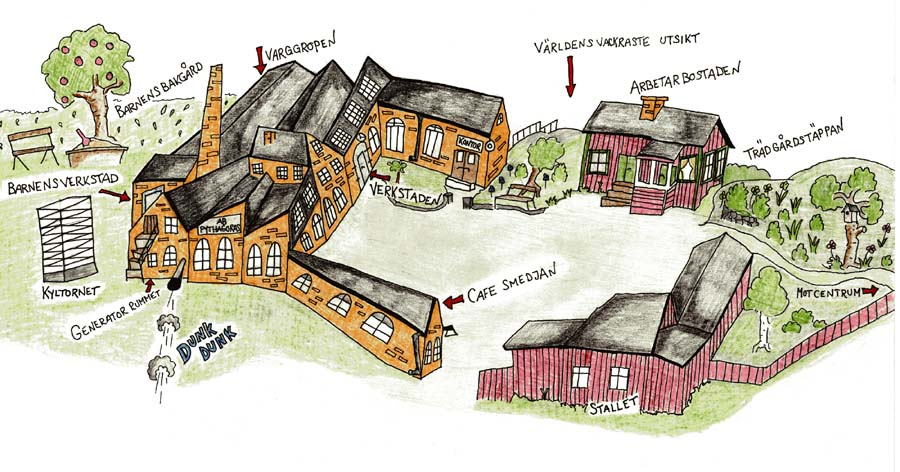

|
Startsidan
Böcker
Dramatik
Kultur-/barnprojekt
Margareta Lindberg Sigfrid |
|  |
År 2003 fick jag i uppdrag av museet att vara verksamhetsutvecklare för ett "Barnens Pythagoras".
VAD ÄR PYTHAGORAS?Litet bakgrundshistoriaHögt uppe på Södra Bergen i Norrtälje ligger industrimuseet Pythagoras. Pythagoras var en gång en mekanisk verkstadsindustri. Verksamheten startade 1898. Den viktigaste produkten var tändkulemotorer. Även om fabriken hade en världsomspännande export och en tid var Norrtäljes största arbetsplats med c:a 90 anställda, var det inget unikt med Pythagoras. Det fanns många liknande tillverkare av tändkulemotorer i Sverige. En del av dem lyckades utveckla sin verksamhet allteftersom teknik och marknad förändrades, men Pythagoras klarade inte omställningen till nya produkter. Verksamheten förtvinade. 1977 fanns bara en arbetare kvar på fabriken. Han hoppades att verksamheten skulle komma igång igen och vårdade alla maskiner så att de skulle fungera när den dagen kom. Den dagen kom aldrig. 1979 somnade Pythagoras in för gott. Lokalerna förföll. Många ansåg att Pythagoras var en skamfläck, som borde rivas och ge plats för bostäder. Andra tog upp kampen för att Pythagoras skulle restaureras och bevaras som ett industriminne. Under sin livstid hade Pythagoras varit en liten fabrik bland många andra. Efter sin död blev Pythagoras en unik industrihistorisk pärla. Tack vare att ledningens oförmåga att förnya verksamheten hade allt förblivit vid det gamla. Industrihistorikerna såg möjligheten för kommande generationer att få insupa atmosfären i en autentisk fabriksmiljö från tidigt 1900-tal tillsammans med gjutdamm och oljelukt. Här skulle framtidens besökare kunna dra igång fungerande, bullrande maskiner och lyssna på tändkulemotorernas dunk och remlåsens smattrande. Kampen för att rädda fabriken blev lång och hård, men genom många människors stora personliga engagemang, stöd från stat och kommun och omfattande ideella insatser kan vi nu besöka det unika industrimuseet Pythagoras på Södra Bergen i Norrtälje. Pythagoras museum idag Pythagoras är ett levande arbetslivsmuseum. Stora delar av miljön är bevarad. Maskinhall, verkstad och affärskontor med tillhörande inventarier är bevarade i ursprungligt skick. Större delen av arkivmaterialet finns också kvar. Museet är idag tillgängligt för besökare genom guidade visningar. Besökaren kliver in i en autentisk miljö, rakt in i det förflutna. Maskinerna i fabrikshallen fungerar och körs vid de guidade visningarna. Det låter. Det är smutsigt. Det lever. Anläggningen är klassad som ett omistligt kulturarv av Landsantikvarieämbetet i Stockholms län. Senare har byggnaderna byggnadsminnesförklarats av Länsstyrelsen i Stockholms län och Riksantikvarieämbetet har föreslagit att Pythagoras ska tas med bland Sveriges tio viktigaste industriminnen. Industrimuseet Pythagoras drivs av en ideell stiftelse, Stiftelsen Motorfabriken Pythagoras, och finansieras med kommunala medel och intäkter från museiverksamheten. För att kunna utveckla en barnverksamhet på Pythagoras har Stiftelsen beviljats medel från Riksantikvarieämbetet, Roslagens Sparbanks Stiftelser och Norrtäljes Kultur- och fritidsnämnd. VARFÖR VILLE PYTHAGORAS SATSA PÅ BARN?1. För att få möjlighet att utveckla museets verksamhet och på lång sikt säkra det kulturarv museet förvaltar. Barn som känner sig välkomna till museet och tycker att besöken är spännande och roliga är morgondagens föräldrar och beslutsfattare. En bred och bra barnverksamhet ökar därför på lång sikt förutsättningarna för att museets verksamhet ska leva vidare. 2. För att stimulera flickors och pojkars intresse för teknik och teknisk uppfinningsrikedom. Konstruktiv kreativitet har spelat en avgörande roll i industrisamhällets framväxt. Att ta del av och pröva uppfinningar för t.ex. kraftutnyttjande och kraftöverföring ger en grund för att förstå hur den värld vi ser idag vuxit fram. Det är också erfarenheter som kan inspirera till egna idéer och uppfinningar. Det var också vår förhoppning att vår verksamhet ska leda till att fler elever, särskilt flickor upptäcker teknikens möjligheter och i större utsträckning än idag överväger att välja tekniska utbildningsalternativ. 3. För att skapa en meningsfull och rolig verksamhet för barn i Norrtälje och därmed också ge Norrtälje en unik attraktion för gästande barnfamiljer. Norrtälje behöver en unik attraktion för barn. En attraktion som stärker Norrtälje som besöksmål. VI PLANERADE ETT PROJEKT I 3 ETAPPEREtapp II ett första steg arbetade vi med den pedagogiska utformningen, förberedelser och byggnationer inför skräddarsydda besök för elever i årskurserna 0-6 i grundskolan. Vi samarbetade med Freinetskolan Mimer i Norrtälje och tog fram ett inspirerande material som, tillsammans med besöken på Pythagoras täcker hela teknikundervisningen för förskoleklassen, lågstadiet och mellanstadiet. Invigning av verksamheten planerades till 2007 05 23. Nu har följande färdigställts med hjälp av enorma insatser av ideella krafter. I vaktmästarbostaden kan man nu se hur en familj levde i Norrtälje på 1940-talet. Inne på kontoret ser allt ut som när fabriken ännu var i drift. Till och med det sprängda kassaskåpet står kvar. I maskinhall, och verkstad är det spännande... och ganska farligt. Men tillsammans med någon av museets inspirerande guider kan barnen få vara med när maskinerna dras igång och kanske få en aning om hur det var att arbeta här en gång för länge, länge sedan. I andra utrymmen byggdes speciellt för barn. I det gamla pannrummet med stora fönster, tegelväggar och eldstad Hittar vi Barnens verkstad. Här stämplar man in och går antingen till kontorshörnan eller till någon av arbetsbänkarna. I Varggropen finns ett tiotal stationer där man kan experimentera med mekaniska konstruktioner för kraft och kraftöverföring. Några exempel: - Med hjälp av en tandemcykel, ett gåband eller en rullstol får barnen själva producera elektricitet för att få igång olika ljus- och ljudeffekter. - Vid den stora kugghjulstavlan gäller det att få alla hjulen på rätt plats för att man ska få dem alla att samverka. Lyckas man kan man se en bild av industrisamhället växa fram. - Karusellen med kompisar i är nästan omöjlig att dra runt innan man placerat den på ett kullager man själv konstruerat. Men sen blir det fart! - Med hjälp av en riktig provbromsningsmaskin får barnen testa kraften hos ett svänghjul precis som man gjorde i Varggropen när fabriken var i drift. - Vid ett jättemekano kan man skapa fantastiska konstruktioner. - Med hjälp av talja och block vinner barnen lätt i dragkamp mot den starkaste vuxen. - Om man följer utvecklingens gång stöter man bl.a. på Pythagoras sats, Archimedes skruv, Leonardos bro, Polhems alfabete och en ångmaskin. - På den uppmålande världskartan kan man frakta tändkulemotorer ut över världen, precis som när fabriken var i drift. Vart transporterna ska gå ropas ut från kontoret via det ormlika talröret. Ett loft byggdes av frivilliga krafter och här handlar det om kreativitet och uppfinningar. På Barnens bakgård gör man experiment med vattenkraft eller provkör båtar man tillverkat i Barnens verkstad. Om ett par år kanske man kan göra en paus och ta sig ett äpple eller några vinbär från odlingarna på Barnens bakgård. En pedagogisk tankeDet som skiljer Pythagoras från stora Science centers som Tom Tit och Kreativum är att Pythagoras lokalmässiga, ekonomiska och personella resurser är minimala i jämförelse. Vi har därför valt att satsa på den billigaste men mest inspirerande av alla museipedagoger - barnens egen fantasi.Eleverna får i förväg ett material som förbereder besöket. Det består av rimsagor, berättelser och sånger för de yngsta barnen. Materialet handlar om figurer som lever i hemlighet på Pythagoras och som hjälper barnen att träna ett konstruktivt kreativt tänkande, förhoppningsvis utan att de märker det. När man besöker Pythagoras börjar besöket med att det dyker upp spår efter sagofigurerna. Det finns också material för efterbearbetning av besöken. "Forskar-Oskar" är en numera klassisk barnboksfigur. Han få vara förebilden som på ett lättsamt sätt introducerar hypotesprövningens konst för barnen på mellanstadiet. Den måste de behärska när de kommer till Pythagoras, för här duggar hypoteserna tätt och bevisen kräver en hel del försöksverksamhet. Pythagoras har blivit en stor succé. Skolvisningarna är alltid fullbokade och under sommarlovet kommer barnen tillbaka med föräldrar, far- och morföräldrar. Pythagoras Industrimuseum |